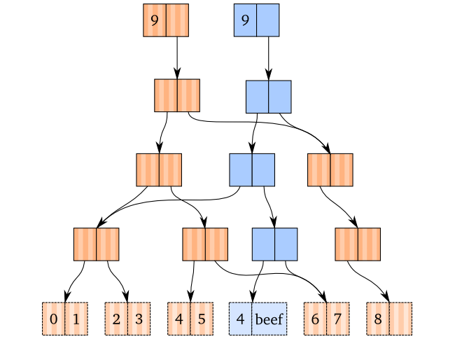
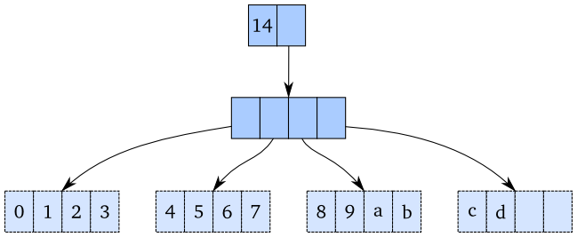
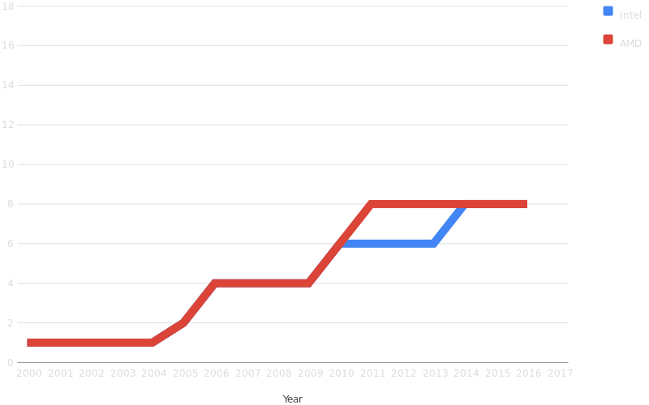
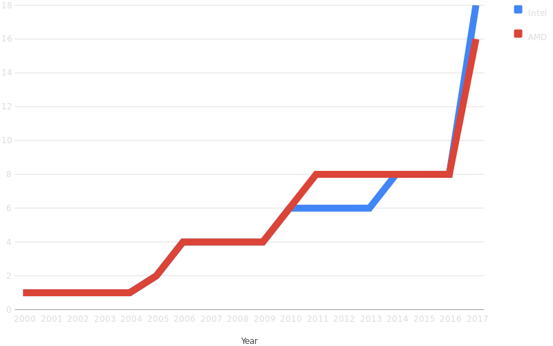

Predictable code
What causes bugs?
- The root cause of all bugs is...
- SURPRISE
- What? A
null? I didn't expect that function to return null! - What? A deadlock? I didn't expect the threads to run in that order!
- What? Why did that global variable change?
- ... Oh. That other function changed it; that shouldn't have happened!
- (Not all surprise is your fault)
How to avoid surprise
- Write predictable code
- Write simple code
- Complexity causes misunderstanding
- Misunderstanding causes surprise
- Surprise causes bugs
- The path to the Green Screen are these
What makes code predictable?
- Hard to answer succinctly
What makes code UNpredictable?
- Easier to answer
- Let's look at some examples
Sample function
1: 2: 3: 4: 5: 6: 7: 8: 9: |
|
Calling it with known data
1: 2: |
|
- What is the value of
myImportantDatahere? - This code is predictable
But what will happen now?
1: 2: 3: |
|
- Now what is the value of
myImportantData? - This code is unpredictable
- At least until you know what
OtherFunctiondoes
- At least until you know what
The other function behind the curtain
1: 2: 3: 4: 5: 6: 7: |
|
- Note that
OtherFunctionmodifies its input in-place
I can't predict my own code!
1: 2: 3: |
|
- I cannot predict how my own code will behave!
- This will certainly cause a bug sooner or later
Safer implementation
1: 2: 3: 4: 5: 6: 7: 8: 9: |
|
Now I can predict my own code again!
1: 2: 3: |
|
Now I can predict my own code again!
1: 2: 3: |
|
- Now we know
myImportantDatawill not change
Predictable Principles
-
Predictable functions should not modify their input.
- Return a new value instead.
Another example
1: 2: 3: 4: 5: 6: 7: 8: 9: |
|
- What will
createPerson()do? - Can't tell just by looking at input
- Depends on some external source
Predictable Principles
-
Predictable functions should not modify their input.
- Return a new value instead.
-
Predictable functions should depend only on their input.
- (By the way, this also greatly simplifies unit testing)
-
Predictable functions should be idempotent.
- Given same input, always return same output
- (BTW, this allows optimization by caching)
Why is this code unpredictable?
1: 2: 3: 4: 5: 6: 7: 8: 9: |
|
-
The
createPersonfunction here breaks two rules- Has an external dependency
- Output can vary even with same input
- Unpredictability is not always bad
Random.Next()should be unpredictable- So should
DateTime.UtcNow, for other reasons
1: 2: 3: 4: 5: 6: 7: 8: 9: 10: 11: 12: 13: 14: 15: 16: 17: |
|
- Instance variables can also cause unpredictability
- Same effect as global variables from function's POV
1: 2: 3: 4: 5: 6: 7: 8: 9: 10: 11: 12: 13: 14: 15: 16: 17: |
|
- Not yet 100% predictable (still has external dependency)
- But
visitmethod is predictable now
List example
- No code for this one since it's easy to imagine
Problem specification
- Have a list of names and addresses
- Want to print envelopes on laser printer
- Printing is slow, so don't block UI
How do we solve this?
- Do printing on a background thead?
- Background thread == parallelism
- Parallelism is HARD.
Naïve approach without locks
- Two roommates, Jerry Brown and John Smith
- Update their address while halfway through printing
- Results in inconsistent output
How to avoid this?
Attempt #1: lock the whole list
- Now UI is locked in read-only mode
- Lost the benefit of the background thread
How to avoid this?
Attempt #2: copy the list first
- Window of vulnerability is smaller
- But still vulnerable anyway
How to avoid this?
Attempt #3: lock list, copy it, unlock it
- Can't get inconsistent data
-
Locks have other issues
- Deadlocks
- Resource starvation
- "Lock convoys"
Another way to do it
- Requires paradigm shift
- Don't modify lists in-place
- Every operation returns a new list
- Data structures are immutable
- We'll look at performance in a minute
Performance implications
- Copying arrays is O(N)
- Appending N items would be O(N²) if you copy each time
- No way around this... if you use arrays
Other ways to represent lists

Updating an item

Higher branching factors

Performance
-
Random access by index: effective O(1)
- Technically O(log₃₂N)
- But that's 7 or less for 2³² items
- Appending an item: O(1)
- Removing the last item: O(1)
-
Inserting item at arbitrary index: O(N)
- But I'm working on improving that
- Will be O(1) when I'm finished
-
Deleting item at arbitrary index: O(N)
- But I'm working on improving that, will also be O(1)
-
Splitting into two lists: O(N)
- But... yeah, you get the idea. Will be O(1) also
-
Concatenating two lists: O(N)
- ... yep. Will also be O(1), though with large constant factor
Why does it matter?
# of cores in consumer CPUs

# of cores in consumer CPUs

Parallelism is coming
Parallel or not? Mutable or not?
- Single-threaded code, mutable data: easy
- With the caveats that we just saw, of course
- Multi-threaded code, mutable data: HARD!
- Race conditions, deadlocks, and resource starvation, oh my!
- Single-threaded code, immutable data: easy
- Though it does require a paradigm shift
- Multi-threaded code, immutable data: EASY!
- No locks needed at all!
- Just as easy as single-threaded
Appeal to authority
I really cannot overstate the degree to which mutability causes problems in software. Many of the practices that are drummed into our heads are in compensation for problems that mutability causes. When you take mutability away, you don't need those practices as much.
Source: https://softwareengineering.stackexchange.com/questions/305018/apis-and-functional-programming
Show me your flowcharts and conceal your tables, and I shall continue to be mystified. Show me your tables, and I won’t usually need your flowcharts; they’ll be obvious.
Alan Brooks, The Mythical Man-Month
Show me your code and conceal your data structures, and I shall continue to be mystified. Show me your data structures, and I won’t usually need your code; it will be obvious.
What Alan Brooks would say today
git actually has a simple design, with stable and reasonably well-documented data structures. In fact, I'm a huge proponent of designing your code around the data, rather than the other way around, and I think it's one of the reasons git has been fairly successful […] I will, in fact, claim that the difference between a bad programmer and a good one is whether he considers his code or his data structures more important.
Linus Torvalds
Data is more important than code
- Understand data structures
-
Understand how each function transforms its data
- Input → ??? → output
- Leads to a more declarative style
-
Imperative, data-mutating style introduces time into the equation
- It matters which of two functions was run first
- Can't tell what code will do on first read
Original example code, revisited
1: 2: 3: 4: |
|
- It matters whether
OtherFunctionhas run yet or not - We've introduced time as a factor to consider
My second remark is that our intellectual powers are rather geared to master static relations and that our powers to visualize processes evolving in time are relatively poorly developed.
Edsger Dijkstra
My second remark is that our intellectual powers are rather geared to master static relations and that our powers to visualize processes evolving in time are relatively poorly developed.
Edsger Dijkstra, in Go To Statement Considered Harmful, 1968
Testimonials
Immutability-first as a programming technique has fixed more bugs and bad code in my applications than almost anything else I’ve ever looked at [...] Many languages are evolving to be ready for the future, adding features that support the needs of a modern programming language, but F# is already there.
We have been evaluating F# for a year now, and have components in our production systems that have been bug-free since deployment.
Since [switching to F#], we have completely replaced a horrifically buggy legacy code base that had years of work from multiple teams of developers with an unreasonably high LoC, into an F# codebase that is easily ~1/20th the size, adding many new features, essentially zero bugs in production, and doing it all in less than a year with a small team where I was the only one with any significant FP experience. I've trained multiple new hires and they have all become proficient quite quickly. Not only that, but we have created a code base that I am extremely proud of.
I have now delivered three business critical projects written in F#. I am still waiting for the first bug to come in. This is not the case with the C# projects I have delivered.
F# delivers a sense of correctness and safety, stronger than other languages I worked with in the past. It is reassuring to know your code will execute exactly as you intend.
... we have found our F# code to be concise, easy to write and reliable to use.
F# was great because I spent less time figuring out how to answer my question and more time actually answering the question. The type providers made consuming and integrating hetrogenous datasets a snap and the pattern matching feature reduced the complexity of the code by an order of magnitude (compared to C#).
When the calculation requires a proper algorithm (i.e. anything that is more complex than a simple for loop), our choice has been F#. I have to say I keep being surprised by how compact it is and, nonetheless, how readable it is even when I’m reading code that I hadn’t looked at or thought about for six months.
The F# solution offers us an order of magnitude increase in productivity and allows one developer to perform the work that are performed by a team of dedicated developers on an existing Java-based solution ...
(Emphasis in original)
Our first iterations were written in C#, but after switching to F#, we saw a drastic reduction in code size, along with an increase in readability. We’ll definitely be sticking with F# for all of our future projects.
I am currently consulting for one of the world's largest insurance companies and my predecessor developed an entire pension quote calculator (typically scheduled to take 300-400 man days) entirely in F# in under 100 days with no prior F# experience at all.